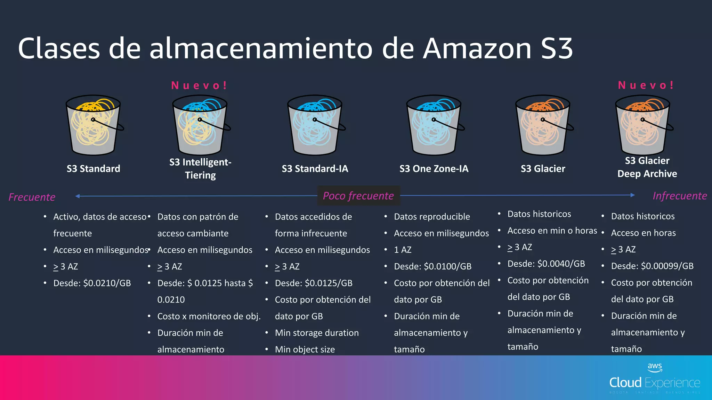

5. Almacenamiento en AWS
Amazon Web Services (AWS) ofrece una variedad de servicios de almacenamiento que permiten a los usuarios guardar y recuperar datos de manera segura y escalable. Los servicios de almacenamiento más comunes en AWS son:
- Amazon EBS (Elastic Block Store) Ofrece almacenamiento de bloques conectado directamente a instancias EC2 para almacenamiento persistente.
- Amazon EFS (Elastic File System): Proporciona almacenamiento de archivos compartido entre múltiples instancias EC2, adecuado para aplicaciones que requieren acceso simultáneo a archivos.
- Amazon S3 (Simple Storage Service): Almacena objetos como archivos y es ideal para datos estáticos accesibles a través de HTTP/HTTPS.
5.1. Amazon EBS
5.1.1. Definición
Amazon Elastic Block Store (EBS) es un servicio de almacenamiento de bloques que proporciona volúmenes de almacenamiento persistente para su uso con instancias de Amazon EC2, se conectan a instancias EC2 como discos virtuales, lo que permite almacenar datos de manera persistente incluso cuando la instancia EC2 se detiene.
5.1.2. Cómo funciona EBS
Creación de Volúmenes: Puedes crear volúmenes EBS del tamaño deseado y asociarlos con instancias EC2 durante el lanzamiento o después de la creación.
Conexión a Instancias EC2: Una vez creado, el volumen EBS se conecta a una instancia EC2. Puedes conectar varios volúmenes a una instancia según tus necesidades.
Formato y Montaje: Después de la conexión, el volumen EBS se formatea con un sistema de archivos y se monta en la instancia EC2. Puedes usar el volumen como un disco de datos adicional o como la raíz del sistema de archivos.
Persistencia de Datos: Los datos almacenados en los volúmenes EBS son persistentes y persisten incluso cuando la instancia EC2 a la que están conectados se detiene o termina. Esto facilita la creación de instancias de respaldo o la migración de datos entre instancias.
Snapshots: Puedes realizar snapshots (instantáneas) de los volúmenes EBS, lo que crea copias puntuales de los datos. Los snapshots se almacenan en Amazon S3 y se utilizan para respaldos, clonación de volúmenes y recuperación de datos.
Características de Rendimiento: EBS ofrece diferentes tipos de volúmenes con características de rendimiento específicas, como volúmenes magnéticos estándar, volúmenes de propósito general (SSD) y volúmenes de E/S máxima (SSD).
Amazon EBS - Documentación de AWS
5.2. Amazon EFS
5.2.1 Definición
Amazon Elastic File System (EFS) es un servicio de almacenamiento en la nube totalmente administrado que proporciona un sistema de archivos escalable y compartido. Permite a múltiples instancias EC2 acceder simultáneamente al mismo sistema de archivos. EFS es útil para aplicaciones que requieren un almacenamiento compartido para datos que deben ser accesibles desde múltiples instancias EC2 al mismo tiempo.
5.2.2. Cómo funciona EFS
Creación del Sistema de Archivos: Puedes crear un sistema de archivos en EFS y configurar su capacidad y rendimiento según tus necesidades.
Montaje en Instancias EC2: Después de crear el sistema de archivos, puedes montarlo en múltiples instancias EC2. Esto permite que todas las instancias compartan el mismo espacio de almacenamiento.
Acceso Simultáneo: Todas las instancias conectadas pueden leer y escribir datos en el sistema de archivos de EFS de manera simultánea. Esto es útil para aplicaciones distribuidas que necesitan compartir datos en tiempo real.
Escalabilidad Automática: EFS se escala automáticamente para adaptarse al tamaño de los datos y al número de instancias que acceden a él. No es necesario preocuparse por la capacidad o la configuración manual a medida que tus necesidades cambian.
Durabilidad y Disponibilidad: EFS proporciona alta durabilidad y disponibilidad de datos. Los datos se almacenan de forma redundante en múltiples zonas de disponibilidad para mayor resiliencia.
Integración con Security Groups y VPC: Puedes configurar EFS para integrarse con grupos de seguridad (Security Groups) y redes privadas virtuales (VPCs) para controlar el acceso y la seguridad de tus datos.
Backup y Restauración: Puedes crear snapshots del sistema de archivos para realizar backups puntuales y restaurar datos en caso necesario.
Amazon EFS - Documentación de AWS
5.3. Amazon S3
Amazon Simple Storage Service (Amazon S3) es un servicio de almacenamiento en la nube escalable y duradero que permite almacenar y recuperar datos en cualquier momento desde cualquier ubicación en la web. Amazon S3 es ampliamente utilizado para el almacenamiento de objetos, copias de seguridad, distribución de contenido y como componente central de muchas aplicaciones en la nube.
Amazon S3 - Documentación de AWS
5.3.1. Conceptos de S3
-
Buckets: Un bucket de Amazon S3 es un contenedor para almacenar objetos. Los objetos se almacenan en buckets y deben tener un nombre único en todo Amazon S3. Creación de un Bucket - AWS
-
Objetos: Los objetos son unidades de datos que se almacenan en buckets. Un objeto puede ser cualquier tipo de archivo, como documentos, imágenes, videos y más. - Carga de Objetos en S3 - AWS
-
Regiones: Amazon S3 está disponible en múltiples regiones de todo el mundo. Puedes seleccionar la región que mejor se adapte a tus necesidades de rendimiento y cumplimiento. Seleccionar una Región para tu Bucket - AWS
-
Clases de Almacenamiento: Amazon S3 ofrece diversas clases de almacenamiento, como S3 Standard, S3 Intelligent-Tiering, S3 Glacier, S3 Glacier Deep Archive, entre otras, cada una diseñada para diferentes casos de uso y costos. Clases de Almacenamiento de S3 - AWS
-
Control de Acceso: Puedes definir políticas de control de acceso para determinar quién puede acceder y qué acciones pueden realizar en tus buckets y objetos. Control de Acceso en S3 - AWS
5.3.2. Configuración y Uso Básico de Amazon S3
- Creación de un Bucke: Desde la Consola de AWS, puedes crear un nuevo bucket y seleccionar su región.
- Carga de Objetos: Puedes cargar objetos en tu bucket utilizando la Consola de AWS, la AWS CLI o SDKs.
- Acceso a Objetos: Puedes configurar permisos de acceso a objetos para definir quién puede ver y descargar los objetos. Configuración de Permisos de Objetos - AWS
- Versiones de Objetos: Amazon S3 admite versiones de objetos, lo que permite mantener un historial de cambios en los objetos. Versionado de Objetos en S3 - AWS
- Almacenamiento de Datos:Utiliza las clases de almacenamiento adecuadas según tus requisitos de rendimiento y costo. Clases de Almacenamiento de S3 - AWS
5.3.3. Casos de Uso Comunes de Amazon S3
- Almacenamiento de Copias de Seguridad: Utiliza Amazon S3 para almacenar copias de seguridad de tus datos y sistemas críticos.
- Distribución de Contenido Estático: Almacena y distribuye contenido web estático, como imágenes y archivos CSS, para mejorar la velocidad de carga de tu sitio web.
- Almacenamiento de Datos para Aplicaciones: Almacena datos de aplicaciones y archivos generados por usuarios en Amazon S3.
- Almacenamiento de Datos para Análisis: Almacena datos para análisis y procesamiento posterior utilizando servicios de AWS como Amazon Redshift y Amazon Athena.
Casos de Uso de Amazon S3 - AWS
5.3.4. Recomendaciones de Seguridad
- Configuración de Control de Acceso: Limita el acceso a tus buckets y objetos utilizando políticas y ACLs.
- Cifrado de Datos: Habilita el cifrado de datos en reposo y en tránsito para proteger la confidencialidad de tus datos.
- Versionado de Objetos: Utiliza la función de versionado de objetos para mantener un historial de cambios.
5.3.5. Clases de Almacenamiento S3
Amazon S3 ofrece una variedad de clases de almacenamiento para satisfacer diferentes requisitos de rendimiento, costo y retención de datos. Cada clase de almacenamiento está diseñada para casos de uso específicos. A continuación, se explican las principales clases de almacenamiento de Amazon S3:
S3 Standard
- Esta es la clase de almacenamiento predeterminada de Amazon S3 y ofrece un alto rendimiento y durabilidad. Los datos almacenados en S3 Standard están disponibles de inmediato y se replican automáticamente en múltiples zonas de disponibilidad.
Intelligent-Tiering
- S3 Intelligent-Tiering es una clase de almacenamiento que optimiza automáticamente los costos. Los objetos se mueven automáticamente entre las capas de acceso frecuente y de acceso a largo plazo según su patrón de acceso.
S3 Standard-IA (Infrequent Access)
- Esta clase de almacenamiento está diseñada para datos a los que se accede con menos frecuencia. Ofrece un costo menor que S3 Standard a cambio de una tarifa de recuperación de datos si se accede antes de 30 días.
S3 One Zone-IA
- Similar a S3 Standard-IA, pero los datos se almacenan en una sola zona de disponibilidad en lugar de replicarse en múltiples zonas. Esto reduce costos, pero los datos no están tan disponibles como en otras clases.
S3 Glacier
- S3 Glacier es una clase de almacenamiento de archivo que ofrece un costo extremadamente bajo a cambio de tiempos de acceso más lentos. Los datos se almacenan en formato de archivo y deben recuperarse antes de acceder a ellos.
S3 Glacier Deep Archive
- Esta es la opción más económica de Amazon S3, pero también la más lenta en términos de acceso. Se utiliza para datos de archivo que se mantienen a largo plazo y rara vez se necesitan.
- Casos de Uso: Cumplimiento normativo a largo plazo, retención de registros históricos, datos de archivo de bajo costo.

La elección de la clase de almacenamiento adecuada en Amazon S3 depende de los requisitos específicos de la aplicación y del presupuesto. Aquí hay algunas pautas generales para ayudarte a seleccionar la clase correcta:
- Si necesitas un alto rendimiento y disponibilidad inmediata, opta por S3 Standard.
- Si tienes datos con patrones de acceso impredecibles y deseas ahorrar costos, considera S3 Intelligent-Tiering.
- Para datos a los que se accede con menos frecuencia, S3 Standard-IA es una buena opción.
- Si puedes recrear datos perdidos y deseas un bajo costo, elige S3 One Zone-IA.
- Para archivar datos a largo plazo con costo mínimo, utiliza S3 Glacier o S3 Glacier Deep Archive.
Recuerda que puedes cambiar la clase de almacenamiento de tus objetos en cualquier momento según cambien tus necesidades
5.3.6. Recomendaciones de Seguridad
- Configuración de Control de Acceso: Limita el acceso a tus buckets y objetos utilizando políticas y ACLs.
- Cifrado de Datos: Habilita el cifrado de datos en reposo y en tránsito para proteger la confidencialidad de tus datos. Cifrado de Datos en S3 - AWS
- Versionado de Objetos: Utiliza la función de versionado de objetos para mantener un historial de cambios.